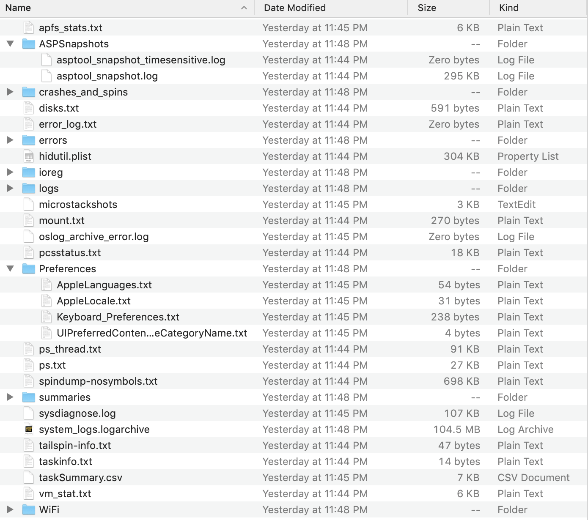

Access Apple TV4/4k Filesystem Information
December 9, 2018
The Apple TV has been one of my staple Apple Products every generation of since its inception in 2006, and quite frankly its the only streaming device that I would recommend to anyone that has at least one apple product. I use it as a streaming device in two rooms for TV and also it provides my house with wall to wall music using Airplay to all of my TVs.
To this day my /r/AppleTV posts have been my most successful on reddit including one about the Apple TV Secret Menu Options. Most of these “secret menus” are for development and trouble shooting but some of the information stored should be displayed such as how much storage is available or used.
The new Apple TV 4/4k has been available in 2 storage sizes, 32GB and 64GB since its announcement in September 2015. It is understood by owners that the space in the Apple TV is very hard to fill being a service streaming and cloud retrieving device, the 64gb in particular being ostracized for being too big and impossible to fill. In any matter, people love to have control over their devices and power users want to be able to view the filesystem information. Now, there is none of this information openly displayed in the settings menu but with a little finesse, you can view all of the system analytics data including the used and available storage in a few simple steps.
You will need: Apple TV 4/4k with Siri remote, an airdrop capable device on the same network as your Apple TV, .tar extraction capability (Mac computer or PC with extraction software).
Hold down the play/pause and volume down buttons for ~10 seconds and release. System Analytics will run in the background and prompt you when it is completed.
Extract tarball
You can export the data tarball immediately to a device with AirDrop (recommended) or it will be saved to be shared later in Settings>General>Privacy>Analytics Data named sysdiagnose_[DATE_TIME_Apple_tvOS***]. Extract the .tar.gz.
Open disks.txt
Inside of the extracted folder open "disks.txt".
Enjoy seeing how little space you actually need in an AppleTV, and how reckless you’ll be with its app downloads for now on.
Freeware. No Trials, No Pirating... Just Great Software
November 3, 2018
So for years now I have been a huge advocate of using free services and applications, pressing for the usage of the open source movement. The community has grown exponentially and long gone are the days that a user had to be an experienced Linux user to know about the world of open source. This post will serve as a list of fantastic free open sourced tools that can rival their paid counterparts and in some cases exceed them for most everyday users.
These are just some of the amazing apps available in the free and open sourced community. Please use and share these with people you know and help create the best software by supporting proper competition in the app development market.
 VirtualBox is a virtualization product available for Windows, Mac, Linux. This is an easy to use and feature rich virtual machine software that makes it easy to switch operating systems in a safe virtual environment.
VirtualBox is a virtualization product available for Windows, Mac, Linux. This is an easy to use and feature rich virtual machine software that makes it easy to switch operating systems in a safe virtual environment.
 Word processing is a need for every user. Whether it's for creative writing, students, professionals or family recipes every one needs to jot down something from time to time and Microsoft Office Suites “Microsoft WORD” is the household name that everyone has grown up with. Just like saying “Kleenex” to describe a facial tissue, MS has created a monopoly over the word processing market by using “Word document” to describe a text file. Libre Office is an amazing and quickly adaptable office suite that is available for Windows, Mac, and Linux. It has a huge community of supporters and developers and has even recently been adopted by government departments and large enterprises.
Word processing is a need for every user. Whether it's for creative writing, students, professionals or family recipes every one needs to jot down something from time to time and Microsoft Office Suites “Microsoft WORD” is the household name that everyone has grown up with. Just like saying “Kleenex” to describe a facial tissue, MS has created a monopoly over the word processing market by using “Word document” to describe a text file. Libre Office is an amazing and quickly adaptable office suite that is available for Windows, Mac, and Linux. It has a huge community of supporters and developers and has even recently been adopted by government departments and large enterprises.
 "There are many like it, but this one is mine." Transmissions compact, minimilistic design, with an easy to use interface that simply makes it the best bit torrent for Mac.
"There are many like it, but this one is mine." Transmissions compact, minimilistic design, with an easy to use interface that simply makes it the best bit torrent for Mac.
 Photoshop is a household name for retouching photos but if you wanted to doctor up a new picture for free, look no further than Gimp (GNUs Image Manipulation Program). This application is packed with a lot of the same tools and features as PS and allows for 3rd party plug ins. Gimp is a freely distributed program with a dedicated open source developers community and has been around since 1996. No licensing, advertisements, trials, email registration or pirating needed to create or retouch your favorite images and with tons of online tutorials and YouTube walk-throughs you can upgrade your image editing toolbelt in no time.
Photoshop is a household name for retouching photos but if you wanted to doctor up a new picture for free, look no further than Gimp (GNUs Image Manipulation Program). This application is packed with a lot of the same tools and features as PS and allows for 3rd party plug ins. Gimp is a freely distributed program with a dedicated open source developers community and has been around since 1996. No licensing, advertisements, trials, email registration or pirating needed to create or retouch your favorite images and with tons of online tutorials and YouTube walk-throughs you can upgrade your image editing toolbelt in no time.
 IINA is the “Modern Media Player for Mac”. IINA is a fantastic media player which makes playing virtually all media files including gifs a pleasure on the Mac. IINA is free and open sourced, utilizes multitouch trackpad and Touch Bar features, offers PiP support and a Safari extension.
IINA is the “Modern Media Player for Mac”. IINA is a fantastic media player which makes playing virtually all media files including gifs a pleasure on the Mac. IINA is free and open sourced, utilizes multitouch trackpad and Touch Bar features, offers PiP support and a Safari extension.
Homebrew
 Homebrew is a package manager which installs application packages into their own directory, which is missing from MacOS out of the box. It makes installing new app packages as easy as writing a single command line in terminal.
Homebrew is a package manager which installs application packages into their own directory, which is missing from MacOS out of the box. It makes installing new app packages as easy as writing a single command line in terminal.
Handbrake
 Handbrake is a free open source video transcoder available for Windows, Mac and Linux. Handbrake allows users to convert video from nearly every format with an easy and intuitive UI.
Handbrake is a free open source video transcoder available for Windows, Mac and Linux. Handbrake allows users to convert video from nearly every format with an easy and intuitive UI.
Windows Service Stripper
September 22, 2018
Well, it’s been a few years since I’ve last used Windows so I thought I’d give it a whirl again in a VM instance. Thanks Oracle for Virtual Box (https://www.virtualbox.org) for an amazing free and Open Source virtualization solution.
I’ve installed Windows 10 Enterprise edition and a few things made me happy upon first sight of the desktop, and a lot made me sigh or cringe. First off the metro interface has taken a welcomed back seat. The settings app has finally been streamlined, the context menus are no longer opened on the bottom 10% of the screen, and the start menu can be right clicked to open file explorer and administrative tools. The start menu can be customized by deleting all of those ugly live tiles as well as Cortana can finally be disabled very easily without castrating the system search settings.
Windows is still home for a lot of packaged bloat, however. Even the Enterprise edition comes with Xbox management and integration services and tons of other useless features for people who just want a bare bones installation.
I have released Windows Service Stripper as a quick and easy tool to help disabling system services, removing unwanted application packages and prevent some of its telemetry services. This tool is safe for private but not intended to be used commercially. This BAT is designed with pro and novice users in mind and requires administrative rights to run. The BAT executes in a CMD.exe window and initiates each step chosen by the user and verified through PAUSE commands. It creates a folder in /ProgramFiles with a .log file records the date and time of each commands last run. There is also an option to enable GOD MODE in C:/. This a Windows Custom folder where a shortcut for all of its built-in Administrative Tools and their descriptions for quick and easy access. WSS is available for download/pull on my GitHub projects page.
iPhone, a PC Replacement
September 18, 2018
For two weeks this summer I did a stupid thing. I used my iPhone 7 as my daily workhorse PC while I was in between MacBook purchases, and I gotta tell ya, it wasn’t that bad. Now, which should come to no surprise, I am an apple fan. I have owned a Mac for over 14 years. But before this little experiment I would have doubted that anyone can replace a proper PC with any iOS device especially an iPhone. After my experience however, I am optimistic about the future of computing and how a unified computer experience is closer than I expected, with iOS. Here’s what happened.
Recently I went through little bit of a setup dilemma. I sold my 2017 15” MacBook Pro after the Keyboardocolypse and bought a 27” iMac. I was dissatisfied with that purchase so decided to return it and temporarily use my phone as my daily driver PC before ordering a brand new surprise 2018 quad core 13” MacBook Pro. During this time, I had to limit my workload a bit but for 2 weeks I went without a real need for a full powered computer. I used iOS text editors, purchased the 200GB iCloud storage plan for $2.99/month and used a cheap Anker bluetooth keyboard I had laying around. This worked for the first day until the strain of staring at my *small iPhone 7 plus screen for hours became too much of a hassle, so I began AirPlaying my iPhone display to my TV and while it being stretched to fit the bigger screen wasn’t ideal, it suited my needs as a temporary fix.
After a few days it felt usable. I enjoyed having everything I needed, personally and professionally, on my hip. The ability to rely solely on services (iCloud, AirPlay, AirDrop, AirPrint) was a change for me. I’m someone who likes having a music library and not relying on streaming music services. I barely used airplay and airdrop. I even already owned a monochrome AirPrint enabled printer but only powered it on when I needed it. Just as cutting the cord to a cable TV service changes your relationship with TV, going from a classic desktop/laptop setup to an iOS device comes with some disadvantages. But if your choosing to go all-in, it’s important to welcome all of its advantages and use them to their full potential.
So is it time to ditch the desk? My answer for most professionals is no. But if you are someone who wouldn’t mind the limitations of being an early adopter and willing to change your relationship with a PC, then go for it.
Windows Wrenching
August 20, 2018
These days I haven’t spent much personal time on Windows, but I still get asked to do the occasional clean/speed boost/tune-up, whatever you want to call it, on someones Windows PC. This blog post is about my technique that I use to preform these simple tasks to keep any Windows PC cleaner, quicker, and as secure as it can be without running globs of BATCH files, and keeping it fairly simple. So if you can follow these simple steps you too can tune any Windows PC to run a little faster, a little smoother, and a little more private.
Complete all Windows, Java, Adobe updates. This will make sure your computer is running the latest, bug patched, security patched services available to your machine. I like to schedule updates at night, or manually add them when I know I’m not going to be using the machine. Sometimes, having automatic updates can be a burden when you need to gain access to information quickly, turn on the computer, only to see that spinning update loading screen that Windows uses to tell you “this is going to be a while…”
*Remove your 3rd Party Antivirus. Did you buy Antivirus with your computer? Are you paying a monthly or yearly fee associated with a bloated Antivirus? If you have a solid backup solution, there might be an argument to remove your 3rd Party Antivirus all together. "It Might Be Time to Stop Using Antivirus" - arsTECHNICA. Windows Defender is a security system packaged with Windows and is already on your computer. There are various competing threats on your computer literally every second. Virus’, root kits, malware.. the list goes on however, no one has a biggest interest in your computers health than Windows itself and relying on third-party antivirus is the biggest scam being sold with Windows Computers to date. Antivirus companies like Symantec, subsidize the cost of the computer by offering software being shipped with the computer. These Antivirus programs can act like viruses themselves competing simultaneously with Windows defender and detect eachother as threats, damand higher and higher levels of resources, slowing down system startup and shutdowns, and delaying Windows Updates and eat your battery life.
The good news is there are many great free Antivirus programs that offer great monitoring and scanning that don't keep your system hostage. So please, at the very least research your current Antivirus if you are experiencing problems, because easiest, most secure and widely used way to clean/speed boost/tune-up is a OS wipe and if you don't already have a solid back-up, or safe initialization restore point, that may be the only option.
Remove Unwanted Startup Applications. Another popular problem is the slowing down of a systems startup overtime. Now, a lot of this has to do with planned obsolescence and services requiring more resources over time, but there are some steps that you can take to help subtract some seconds or minutes from your machines startup time. Remove Unwanted Startup Items. There are multiple ways to preform this task:
[1] Remove startup items through Task Manager: [Right-Click the Windows Start button and select Task Manager] or [press Ctrl, Shift, Esc] or [right-click on the empty space of the taskbar, click Task Manger]. When Task Manager is open, click ‘more details’ at the bottom of the window. Click on the Startup tab, right-click on suspect application and select Disable from the pop-up window.
[2] Remove startup items from Startup Folder: press the Windows Key (next to space bar) and R key simultaneously to open Run command box window. Type “shell:startup” and press Enter key to open the Startup folder. Then press Ctrl-A to select all items in the folder then press the Delete Key.
Clear All temporary files. Deleting all of your machines Temporary files is the fastest way to free up a significant amount of space on your Windows machine. Again there are multiple ways of viewing and deleting these files:
[1] Click: Start (Window icon)/Settings(gear icon)/System/Storage/This PC/Temporary files and select Temporary files check box. Remove files.
[2] Press Windows Key (next to spacebar) and R key, simultaneously to open the Run command box. Type “%temp%” and press the Enter key. Select all items and press Delete key.
Adjust System Performance. Disbling a ton of Windows aesthetic visual effect features can help making your system run smoother. You can adjust these system settings in the Systems Properties settings.
Click: Search, on the taskbar. In the search field type "systempropertiesadvanced". The System Properties window with its advanced tab will open. Under the 'Performance' heading, CLICK [Settings]. The performance Options window with its Visual Effects tab will open. SELECT the 'Adjust for better performance' radio button and click [Apply] then [OK].
Uninstall Toolbars. There are a lot of ways to uninstall Toolbars from many different developers of web browsers. Most toolbars are enabled through the browsers extension library. Navigate to the enabled extensions section under settings and disable all suspect toolbars.
Remove PUPS, Potentially Unwanted Programs. Navigate to: Start/Settings/Apps, choose program you want to remove and select Uninstall. Restart when all applications you wanted to be removed have been successfully uninstalled.
Personal Assistant Siri
July 22, 2018
Like most people, I don’t answer my phone unless I recognize the number or am expecting a call. And with iOS’ voicemail transcribe service, it’s even easier to be an introverted recluse. Hooray! And if you’re a self depreciating introverted recluse like me, you don’t like the sound of your recorded voice. Luckily, not only can iOS transcribe your voicemails, but Siri can even record the greeting to your voicemail box.
No, unfortunately there is no button to push to activate this feature yet, but you can get ahead of the curve and set Siri as your personal assistant yourself with a few steps involving iOS’ Speech Accessibility features. First you need to enable this accessibility feature.
What you will need: 2 Siri enabled apple devices, your phone to record the greeting and a separate device to speak the greeting message. It is possible to record Siri’s output with the ‘Voice Memo’ app, but the quality will be unacceptable in my opinion.
Let’s get started!
Activate Speech Accessibility:
Navigate to [Settings> General> Accessibility> Speech].
Here you can enable two useful features. The first option ’Speak Selection” enables Siri to literally speak any selected text on your device. When you select or select-all any text on your screen, parse over and click ‘speak’ in the context menu. This maybe a better option if you don’t like utilizing all of iOS’ multitouch features. The second option ‘Speak Screen’ enables Siri to speak the entire screen by swiping down from the top of the screen with 2 fingers. This option will enable Siri to speak all the text in the active window of the screen or selected test. This is the faster most preferred method.
So go ahead and try it out! Open a new note in the Notes app, and make Siri say anything… Okay, play for a minute. Make *it say some inappropriate things….
Get that out of your system? Good. Now, write a greeting message. Something like, “Hello, you have reached John Doe. This is Siri, his personal virtual assistant. John cannot answer the phone right now so if you leave a name, brief message, or text, he will get back to you as soon as possible.” Play it a few times, add some extra punctuation for fluidity and proper speech pattern timing.
Record Greeting:
Navigate to [Phone>Voicemail>Greeting]
Enjoy Siri as your new PA!
AppleTV "Secret" Menus and Siri Remote Actions
June 22, 2018
To this day my /r/AppleTV posts have been my most successful on reddit including one about the Apple TV Secret Menu Options. Most of these “secret menus” are for development and trouble shooting but some of the information stored should be displayed. Here they are!
Used for development and troubleshooting by Apple Support
Navigate to: settings>accounts> [4x click Play/Pause] *any menu item to access AppleConnect
Access Retail Demo Configuration ScreenThis one was a problem for a lot of people who bought their Apple TV second hand or refurbished. If the Apple TV seems to be very limiting and resrtrictive out of the box it may in fact be in demo mode.
Navigate to: Settings>General>About [4x click Play/Pause] to access demo mode toggle.
Apple TV DiagnosticsUsed for development and troubleshooting by Apple Support
Navitate to: Settings>General>About>Name [4x click Play/Pause] to access Apple TV diagnostics ticket number entry screen.
Internal Settings, AppleConnect, VPN, ConfigurationUsed for development and troubleshooting by Apple Support
Navigate to: Settings>System>Software Updates> [4x click Play/Pause]*any menu item to access advanced settings
Apple SecureWIFI SetupUsed for development and troubleshooting by Apple Support
Navigate to: Settings>Network>Wi-Fi [4x click Play/Pause] to access Apple secure wifi setup.
Extra information in the About SectionToggle part number/model, HDMI Firmware/tvOS version.
Navigate to: Settings>General>About [Tap bottom section of touchpad on Siri remote]
Show Wi-Fi BSSID, Wi-Fi Channel, Device id, Advertising ID.
Navigate to: Settings>General>About [Tap top section of touchpad on Siri remote]
MOS Training
June 12, 2018
Recently a lot of people have been asking me "how can a jumpstart my career in IT?", and to be honest there is only one real answer to that. "Get some certs!" Now, certification training is beyond overwhelming. There are certs for everything. Security, Networking, programming... and while the certificate training alone won't hand you a job, it will add a professional edge and a globally recognized industry endorsed skill set to your resume. For instance the easiest and first certification anyone interested in boosting their administrative or business career (even outside of IT) is obtaining a Microsoft Office Specialist Certification. The MOS is designed to give you the oppurtunity to demonstrate strong skill levels in all of Microsoft Office's Suite and 'Holding a MOS certification can earn an entry-level business employee as much as $16,000 more in annual salary than uncertified peers.'
"How do I get started?" Well, there of course are paid classes at colleges you can take, paid online classes, and even one-on-one paid sessions with Microsoft Proffesionals. Depending on your time and financial situation there are also a wide variety of FREE online learning materials and tutorials that you can use at your disposal and quite frankly, WHY WOULDN'T YOU! So go! Grab some coffee and invest some time (money if you desire) into jumpstarting that career: